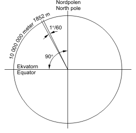
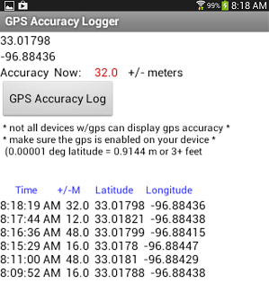
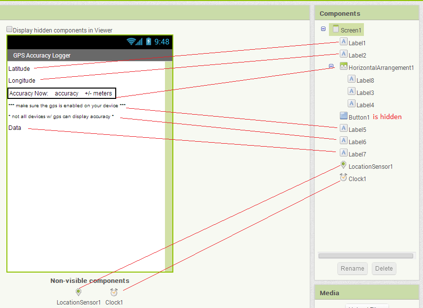
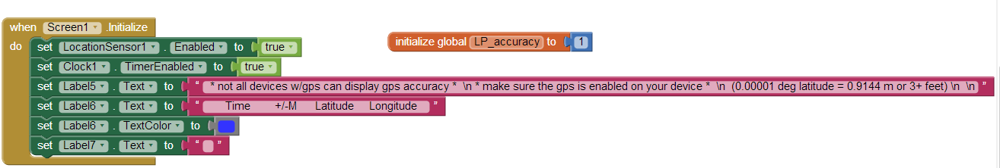
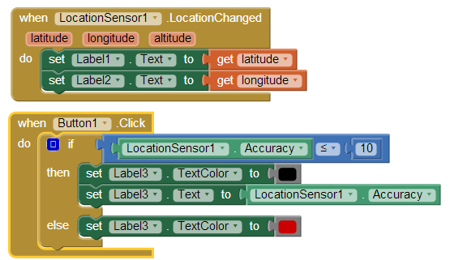
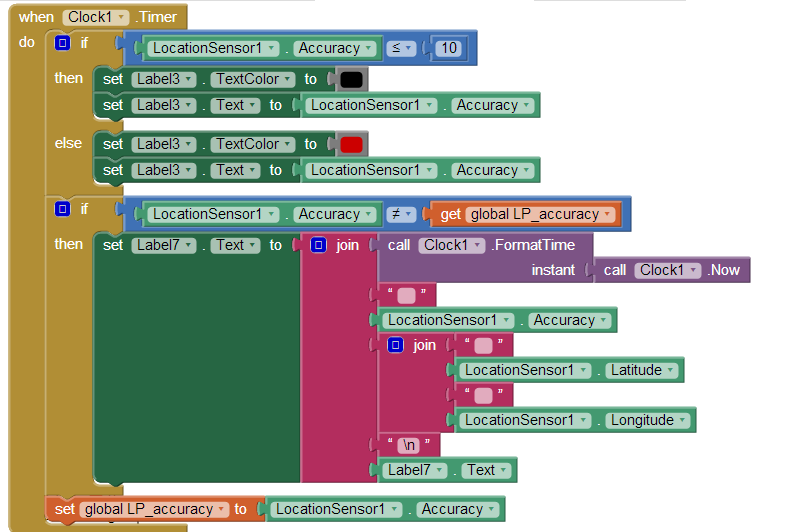
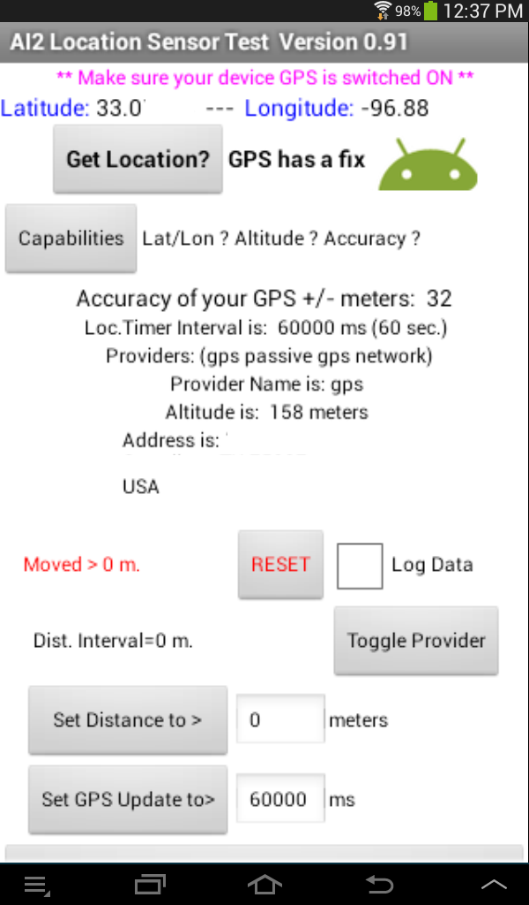
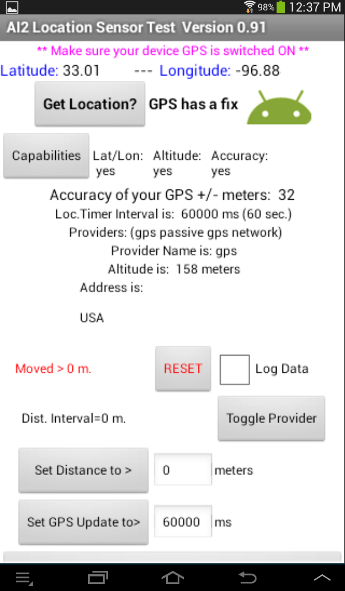
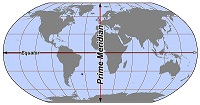

The AI2 LocationSensor is a simple control that is difficult to use without knowledge of some basic concepts of geo-location. The location sensor object is used to communicate with the global positioning satellite receiver (GPS) in your phone/tablet. When the LocationSensor communicates with the built-in GPS receiver, the GPS can determine the location of your device. The sensor can also work with network/wifi location services. Finding a location using the network uses very different techniques to determine a location than used with a GPS. Location means, the device's present latitude and longitude or it can mean your street address. The measuring units employed in the location object for distance are meters and decimal latitude/longitude for those measurements. Time is measured in milliseconds (ms). Be aware that one second = 1000 ms. and 60000 ms is one minute.
When the sensor reports distance information or you set a distance into the object, the units need to be meters. The control only understands meters. If your app must deal in English units, use the Math blocks to convert units at the time you display them. Convert to feet or use more/different math blocks and convert to miles. Calculate everything in meters, report the result in feet or miles on your display. You do not have to do the units conversion everywhere since you should be doing all the calculations necessary in your apps using meters. Think meters!

A nautical mile is the distance subtended by a minute of angle (1/60 of a degree) across the Earth's radius. What this means for you as a programmer is that the distance between a degree of latitude and the next whole degree is sixty nautical miles. A degree of longitude is sixty nautical miles at the equator, but the separation between adjacent whole degrees of longitude diminishes as you change latitude toward the poles. The spacings between degrees of Latitude are constant, the spacing between degrees of Longitude are variable. The sensor reports location in decimal degrees latitude and degrees longitude. Consider, 0.00001 of a degree of latitude is 0.006 of a nautical mile, or 3 feet, 7+3/4 inches. I mentioned here developers should think in terms of meters, but a long time ago, navigators described their ship's position with respect to the English units of degrees, minutes and seconds. Latitude and Longitude are still described in terms of degrees, minutes and seconds. These are awkward units for use on a computer, so developers and others commonly use decimal Latitude and Longitude descriptions. Doing that makes the math in calculations relatively easy. The metric way of looking at 0.00001 of a degree of latitude is that it converts to 0.9144 meters. The measurement tells us, satellite positional information can be reported is to a precision of 0.9 meters. The satellites report positional data using five decimal place precision. Does this mean that when a GPS gets a fix on multiple satellites that the smallest distance resolved should be 0.9144 meters? No. For other reasons, the best accuracy possible with specialized GPS receivers is on the order of three meters. There are techniques that can make the resolution better. The satellites report latitude and longitude to five decimal places,. Your phone/tablet, GPS latitude or longitude is only accurate to four decimal places and its accuracy is worse on occasion as explained later. As you develop apps with this tool., be aware the GPS in your device can do a lot, but its accuracy is limited in many situations.
You will do your best job of developing apps using the LocationSensor if you understand how a GPS system works. Geo-location principals and a description of the LocationSensor Properties, Events and Methods are described near the end of the tutorial.
GPS Accuracy Logger A Simple GPS App
GPS Accuracy Log is an app that demonstrates the use of a device's Global Positioning Satellite (GPS) receiver. The app also demonstrates how the accuracy of a device's GPS varies depending on where the device is located. What the LocationSensor control does is instructe the GPS receiver in a phone/tablet to get a satellite fix (find a satellite, determine the information from the satellite is valid, find at least two more satellites to confirm the information, and only then report the information back to your device). Some GPS can use from between 12 and 20 satellites to get a very accurate fix, providing the GPS receiver is capable of receiving 12 or 20 channels of data. Many simple devices will only use a few satellites.
Shown below is an image of the screen of a 7-inch tablet and images of the AI2 blocks required to program the app. The example app captures latitude/longitude positional data and provides a numerical estimate of the reliability of the GPS' satellite fix (Accuracy). Small Accuracy values indicate better accuracy. The app reports what the GPS resolves as latitude and longitude and demonstrates how the device accuracy might vary as the GPS updates its satellite fixes, the device is moved from outside to in a building or loses a fix on the satellites it uses to determine location. Note the change in the accuracy readings captured over a short period of time (eight minutes). This device was stationary on a desk inside a building when it captured the readings and there is significant variation in the ability of the device to provide accurate location information. Satellites continually move around the Earth,. The GPS in the device looses accuracy as the number of satellites it can receive decreases. The accuracy of the fixes normally increases as the GPS can receive more satellites. AI2 can report the accuracy of any fix provided the GPS receiver on the device has the capability of reporting Accuracy (one of the many properties of the LocationSensor described later). The GPS is designed to use as much information and from as many satellites as possible to provide the best possible accuracy at any instant in time. Later is a discussion of why accuracy matters, what causes it to fluctuate and what a developer can do to minimize the impact on the users of the app by avoiding the reporting of 'suspicious' location data.
Before starting to build this app, note that you must test this app using WIFI or USB on a device having real GPS capabilities. You can create the app's blocks and screen design while connected to an emulator as long as you are aware the emulator does not have the ability to determine location information. If you do program on the emulator, you will want to disable the Clock blocks while transcribing the block code. Also note, the device you experiment with MUST have a built-in GPS receiver. Later is a simple discussion of what can be done to provide location information by connecting to a network or through WIFI. Phones/tablets without a GPS receiver can provide location data (although it is less precise) and although how is mentioned here, will be the topic of a future tutorial.
AI2 does not have the tools to interpret all the information available in the data stream broadcase from the satellites. What a satellite "knows" is reported in the NEMA format transmitted from satellites and received by a GPS. NMEA 0183 is a standard for communicating with marine electronic devices and is a common method for receiving data from a GPS. The NEMA data stream is a compilation of lots of data transmitted from a satellite in text format. Other programming systems have the tools to determine the number, position, signal strength of the received satellite signals and other properties based on that data stream. An AI2 app can not presently mine all the data available from a GPS satellite, but that is not usually necessary. Despite the limitations of the AI2 control, AI2 provides the basic functions needed to use a GPS receiver in your device.

The GPS Accuracy Logger app requires just a few blocks and controls. The heavy lifting is done in the LocationSensor control itself. Use a LocationSensor1, a Clock1, Button1, and seven labels (1 through 7) on the Design screen to display the GPS information the app will acquire. The screen display uses a single Horizontal Layout control ; the layout should contain the Label8, Label3 and Label4 objects Button1 (shown above with the caption GPS Accuracy Log in a running app image) controls the updating of Accuracy. The button is intended to be 'hidden' unless you include some optional code (see the aia source code later). The button is for your use. In the aia source code, the button is hidden. Enable the button to showing from the Design screen if you decide its simple function is useful.
An explanation of the parts:
The Design screen below shows a suggested placement of the controls. Placement is not critical. Label3 is the control in the middle of the HorizontalArrangement1 shown below (Label3's text indicates "accuracy" on the screen. When shown on the screen of a running app, the label reports the Accuracy values in a red or black font. Label8 has the text "Accuracy Now:" text ; Label4 has the text "+/- meters." The text in Label8 and Label4 never change.

The GPS Accuracy Logger app sets some device default values for the location sensor when the opening screen initializes. The Screen1.Initialize block contains the code. Set LocationSensosr1.Enabled to true allows the control to talk to the GPS receiver. The set Clock1.TimerEnabled object enables a timer used to poll the LocationSensor's properties. The timer polls every second and checks to find out if the reported accuracy has changed since the last poll. Subsequent controls put some text information into the labels on the Design screen. The set Label6.TextColor to (the blue block) changes the color of the label to blue so it can be easily seen . This label is the header for a simple screen table of information the app generates. The last block hides the text that was temporarily assigned to Label7 in the Design screen. ( set Label7.Text to no value).
Initialize a global variable to temporarily store the device's accuracy advice; name the global variable LP_accuracy (short for ListPicker Accuracy).
Now the fun stuff. The LocationSensor1.LocationChanged block tells your app what it thinks your device's present latitude and longitude are in decimal degrees after the GPS confirms a fix. and the location has changed. The two blocks of code report the GPS location information in the two labels. Hover over the LocationSensor1.LocationChanged orange block latitude and longitude variables with your PC mouse to capture the get latitude and get longitude blocks that feed the information into the labels. The latitude and longitude are 'local' variables, therefore you can only use them within this block.

The Button1.Clicked block is a block that will report on the accuracy of a current satellite fix whenever it is touched. Accuracy is a determination of the reliability of the location information at the time of the fix. The block is not necessary to the app since the Clock1 object is used to set defaults and request information from the GPS on a regular basis. Button1 is shown and provided as a convenience. If you download the aia source you will notice the block is 'hidden' . The blocks within the Button1 event handler replicate part of the code in the Clock1.Timer block, the block that changes the color of the GPS accuracy in meters from a black font ( when the sensor reports accuracy <= 10 meters) to a red font when the value exceeds 10 meters. Change the 10 meter value to whatever you like. Keep in mind the cautions mentioned later in the tutorial regarding using distance triggers less that 10 to 20 meters. The logic block compares the LocationSensor1.Accuracy block value with the value you decide is the cut-off for reporting that reliable satellite fix data is available.
The Clock1.Timer block (along with the LocationSensor1.LocationChanged block) are the core blocks of the app. These blocks are placed directly in the timer block if you follow the tutorial instructions. However, developers may want to put these blocks in a procedure block instead. Call the procedure DoThisStuff, and place a call DoThisStuff block in the Clock.Timer block instead of the individual blocks. While this tutorial is about the sensor, I want you to be aware there are many ways of doing the basic programming. Using a procedure makes the example slightly more complicated. Why a procedure? Consider, in addition to using the Clock1.Timer block for this code, you as a developer could put the blocks into a button.click event handler along with a request to force an satellite fix block of code to update fixes on demand. If the necessary blocks are in a procedure, you could call DoThisStuff. Adding an additional button with appropriate blocks will provide a “manual” control to update the request for a satellite fix reliability more frequently. The extra button is for you to design.

What is all the stuff in the Clock1.Timer block?
You are already familiar with some of the blocks. They are a duplication of the optional blocks used in Button1. The purpose of the code in the Label3 blocks was explained above. The code in the Control blocks is new. The first If block tests to see if the Accuracy is better than 10 meters (checking if a distance value is less than 10 allows filters the data to display the "better" in a black font and forces higher values to display in a red font indicating an issue with the reported location reliability). The second If block compares the present accuracy with the accuracy determined during a previous check. If the two accuracy readings are the same, the block does nothing, however if there is a different value, the app understands the accuracy has been updated and reports a new line in the data list. The list enumerates the latest accuracy, latitude and longitude. This “list” is displayed at the bottom of the app's screen. One line appears approximately each minute. The app can do this type of text display in a label because the \n symbol is used to force each data set (consisting of time, accuracy, latitude, longitude) onto individual lines. Although you code a single Label, the result on the screen is multiple lines displaying the time of the observation and three pieces of satellite data, ordered with the most recent information at the top of the display.
When does the location sensor 'know' when to check for a satellite fix? There are two ways to trigger a satellite fix, one is using the TimeInterval property of the sensor. A second is to use the DistanceInterval object The value coded in the LocationSensor1.TimeInterval property determines the frequency of satellite fix attempts. The control will update at a frequency determined by the value assigned to this property. But, a TimeInterval block is not included in the code blocks shown above. Why? The default value of the LocationSensor1.TimeInterval is already set to once a minute. This refresh interval is acceptable in this app. I avoided using a set LocationSensor1.TimeInterval block but could have also placed the block in the Screen1.Initialize block. Where you set the value is up to you, the developer. The LocationSensor triggers once a minute approximately. Stated another way, the LocationSensor1.TimeInterval contains the time interval at which the GPS will check for a fix, baring execution of recognition of a distance traverse greater than what is currently set in LocationSensor1.DistanceInterval object.
The DistanceInterval setting is this app is left at its default setting of 0. Distance change is not used as a trigger in this app. A possible use of the DistanceInterval property is demonstrated in the Location Sensor Test app example discussed later.
Beware, the time interval units are in ms (described earlier). As a developer, you can set the 'refresh' value to anything you want. Some settings may be very undesirable. How often and which tools to use are up to you, the developer, so make sure you are familiar with the detailed description of below of how the control works.
Finally, a method to poll the Accuracy property is needed in the app. The Clock1 is used to poll the current LocationSensor1.Accuracy to establish if the GPS has determined a different accuracy determination is available since the last check was made. The app takes advantage that the Clock1.Timerblock fires once a second as designed and without any intervention by the programmer. Polling the Accuracy once a second is reasonable so the app uses the default clock time interval setting. The timing value for a report on the Accuracy can be set to other values on the Design screen or from within the app by changing Clock1.TimerInterval to whatever whole number value you require in ms. Do not confuse this polling clock that checks on changes in the Accuracy value with the LocationSensor1.TimeInterval. The LocationSensor1.TimeInterval determines how often the GPS attempts a satellite fix (find a satellite, determine the information from the satellite is valid, and only then report the information back to your deice). Later, you will learn, your GPS has to have that information from a minimum of three satellites to provide the GPS receiver with information that is useful; not enough data, no fix When there is insufficient data available to the GPS and the GPS appears to be "thinking," you probably will notice a small icon flashing at the top of your phone or tablet. Whenever you see that icon, the GPS is attempting a satellite fix.
House keeping: What is the |n for? This symbol (consisting of a backslash and the character n) forces a line change in a label. Placing the symbol in a text block helps to make the reporting display 'pretty' when the Label7 is updated and posted on the device screen.
Testing: Beware, you must test this app using WIFI on a device having real GPS capabilities. You can program the app's blocks connected to an emulator as long as you are aware the emulator does not have the ability to determine location information.
It gets worse. Heed the cautions on the app. Not all phones/tablets have a GPS receiver and not all of those have the ability to use the Accuracy control. There is more. On some devices, the ability to use Location Services, whether GPS or Network/WIFI may be turned off. GPS Accuracy Logger does not check these conditions. If either location service is turned off on the device you are testing with, you will have issues. Go to your device's Settings. There should be something like Location services. Make sure the boxes for permission to Use GPS satellites and Use wireless networks are checked. If you only want GPS, do not check the Use wireless networks box unless you want the World to know where you are. The settings you make here give permissions for ALL your apps.
AI2 Location Sensor Test App
You will NOT find the blocks here for an app that demonstrates most of the capabilities of an AI2 Location sensor (Location Sensor Test ). There are lots of blocks, more than I want to copy. Attached is an aia file so you can explore the code. The two images below show a working Location Sensor Test app on a Tablet. By now, you are an expert at using the basic properties of the sensor. I hope that the absence of an explanation for the block logic in this Sensor Test App is not a hindrance. I assume you read through the entire tutorial (including the explanations following the fun stuff), tried your own location sensor experiments and can follow the programming logic. When in doubt, read the section below that describes the behavior of the various control properties, methods and events.

The image to the left shows the sensor test tool in action but prior to touching the Capabilities button. Touch the button and the screen should look like the image on the right. The app confirms the tablet's GPS has all the required capabilities.
GPS Accuracy Logger does all of the following:
-
Checks whether the Latitude/Longitude, Altitude and Accuracy capabilities exist on the device being tested. Use the Capabilities button. Not all devices have all these capabilities.
Reports the Accuracy of each GPS satellite fix in +/- meters. The number describes a circle with the reported radius. Your GPS 'knows' it is somewhere within this circle. (see explanation below).
-
Announces the LocationSensor.TimerIinterval. The tool reports the current setting and allows you to change it.
-
Announces the available service providers. On a WIFI tablet, you possibly only get 'gps'; on a phone, there will be more options if the phone has a real GPS.
-
Shows the currently selected service provider. You can change between gps and network by touching the Toggle Provider button. Yes, it switches between gps and network only in this app.
-
Reports the Altitude, but only if the device GPS has the capability. Do not expect the Altitude to change when you walk from street level to the third floor of a building. The measurement is not that accurate.
-
Reports the current address, if one a location address is available.
-
Lets one know if the device has moved more then the Distance selected. Read the caveats in the sections below. You can change Distance to any value in meters you like.
-
Allows one to set both the Distance and Time intervals. Distance is probably set as 0 for most devices as a default; Time to 60000 ms (one minute). The defaults might be different on some devices.
-
Can toggle providers. Toggle means switch between the two hard coded providers in this app.
-
Can provide a data log of Accuracy and Latitude and Longitude over a period of time. You check the Log Data box. When checked the app will provide a data stream reporting time , Accuracy, Latitude and Longitude. You may have to scroll down the screen.
-
Reports whether the GPS has a fix or not and whether location information is network based. Read about fix below.
I am not certain the data settings for time and distance provided to the device GPS by Location Sensor Test are persistent after the app closes. If you change the time and distance settings in your app, does the device GPS return automatically to its default settings after an app has closed? A "Close the app and reset Location Distance to 0 and reset the location timer” button is part of the app. It ensures the GPS is reset if necessary. Use the button on the app to return the GPS's settings to its default status and close the app.
Things to do: a) make the app screen look pretty, b) add a vibrate or sound alarm, for the Distance c) display the accuracy in a reliability circle, d) check that the app really works for you. (Use the Canvas object to draw the reliability display circle).
How a Phone / Tablet “Knows” its Location
How is a phone or tablet able to "know" where it is at? Understanding how GPS and Wireless Networks work is necessary to understand the location sensor control. Both GPS and Wireless networks provide positional information in different ways. The LocationSensor control can obtain information using either system but the developer of an app has to explain to the sensor with his/her blocks how to do it.
Anything you want to know about GPS and how GPS receivers works is summarized here: http://en.wikipedia.org/wiki/Global_Positioning_System . Wikipedia is not always the most accurate source, but in this instance Wikipedia provides a pretty good introduction to geolocation concepts. The article is part of your "home work" assignment.
The GPS satellites broadcast two types of data called Almanac and Ephemeris. Almanac data includes the satellite orbital parameters. It is precise data and is valid for several months. Ephemeris data includes orbital and clock correction data for each satellite which is necessary for precise positioning. When the GPS is initially turned on, the receiver "looks" for the satellites based on where a satellite is supposed to be and as described in the Almanac and corrected for current time. The GPS determines if the Almanac data is valid; if the Almanac is not valid, possibly if the GPS receiver has been turned off for a while, the GPS searches the sky or is internally re-initialized so it can download a new Almanac from a satellite and start over. This is why a fix may take a longer time when a device is turned on (watch the blinking GPS indicator on your device) and why subsequent fixes are made more rapidly.
A GPS receiver needs a clear view of the sky to get ephemeris / almanac data from the satellites. It uses this data to determine location. It needs measurements from a minimum of three satellites to provide positional information. GPS receivers generally have the capability of using from 12 up to 20 satellites to provide accurate information. In practice, most GPS use fewer then 9 or 10 satellites to provide a location fix. A limited number of satellites might be visible to the GPS, some satellites are out of service, objects are between the GPS and satellite and shadow and reduce the satellite's broadcast signal strength, and the number of channels the GPS can receive and other factors determine how many satellites are used by the GPS in a fix.

Wireless Networks use triangulation to determine the location of a device. The location information is obtained more rapidly than the data obtained from a GPS fix . A GPS fix can take from a few seconds to a minute or so with single channel GPS receivers. A network fix is very fast. However the data provided by Wireless Networks is less reliable than most GPS fix's. Ordinarily network geo-location is not as precise as the information provided by a GPS. Mobile phones get the cell tower IDs from the nearest three or four cell towers in the vicinity. The technology uses the time difference of arrival to get your “exact” location within 10-50 meters of accuracy with 10-15 seconds. This method is called MS-Assist for GSM phones. A fall back method is called Cell ID. Cell ID is a passive guess of about 1.7 to 8 km (1-5 miles ) in accuracy and is possibly used if MS-Assist doesn't report sufficient certainty to get a position fix less than 100 meters (the minimum performance threshold for MS-Assist).
A GPS is used to get an accurate snap-shot of the device location while moving or stationary. Wireless Networks can be used for stationary positions in the absence of a GPS receiver. The information provided in the tutorial regarding these location system details is continually in flux. Use your search engine to learn the details and stay informed about technology advances.
It is up to the app programmer to choose which location method is used by their app or to provide a means of selecting between location providers. Read about providers below. The usual choices of provider are: gps or network.
What Developers need to know to Program using the AI2 LocationSensor Object
Developers have lots of things to consider before even starting to use the Location sensor in AI2. To make a successful geolocation based app, the developer has to know how things work and the limitations that exist because of quality of device included GPS receivers, how the GPS satellite system works and what can be done to overcome the obstacles.
1) The sensitivity of the GPS receivers in different devices varies. Some devices are more sensitive to whether the phone/tablet is in a building, under trees or is traveling in canyon like environments (i.e. in the mountains, between sky scrapers or merely tall buildings). Buildings obscure the line of sight from the GPS to the positional satellites. Weak signals at the GPS result in reduced accuracy or loss of fix.
2) A GPS receiver's accuracy is dependent on the number of satellites it can get a fix on (receive and confirm) at any moment. Consequently, accuracy of location reported by the device can vary easily by plus or minus 50 meters or so over a very short period of time. GPS accuracy is also dependent on the quality of the GPS in your device. Real GPS devices, not tablets/phones, can be accurate to within less than 2 meters. Your phone probably has no where near that capability, but it might. Most GPS have 12 parallel channels. The channels help to acquire satellite signals. Some GPS have only a single channel, meaning the receiver is slower in acquiring a fix and may not have the accuracy of a receiver with multiple channels. Newer phones have receivers that have 20 channels and A-GPS and GLONASS (GLONASS is the Russian version of GPS) which can operate together.
3) Experience with the GPS receiver in a Galaxy Tab 2 7" tablet demonstrates the LocationSensor.DistanceInterval can trigger an unexpected change of location response when set to 100 meters. The GPS may signal a distance change even when the tablet is at rest. Not often, it happens. A 100 m setting for this trigger tool is reasonable but setting the DistanceInterval to that value does not guarantee the device moved 100 meters when the sensor triggers. This is an issue occurring because the ability of the GPS to accurately resolve a location is in a constant state of flux. An early device trigger response can be prevented by providing logic blocks to only trigger when the GPS accuracy is within norms you program.
4) When the GPS accuracy is reported byLocationSensor.Accuracy to be 32 meters for example, it means that if a LocationSensor DistanceInterval is set to anything less than 32 meters, the GPS will attempt a new fix (change) as if the distance is set to 0 meters. The GPS units in low end phones especially are not very precise and some phones have no GPS at all.
5) To understand how your device's accuracy (positional reliability) changes, set the DistanceInterval to zero and monitor the changes in accuracy of your GPS in the comprehensive app described above. The GPS Accuracy Logger coding project described above monitors changes in GPS accuracy with time. The demo AI2 Location Sensor Test collects data from your device. Not all phones/tablets provide all this data. Many phones may not have the altitude data, for instance.
6) Read the MIT App Inventor's team description of the location sensor here http://appinventor.mit.edu/explore/content/sensors.html An annotated version of the description describing the tool in more detail follows int the next section.
In review, the GPS receiver in most phones is not precisely accurate. The positional information it provides may be only +/- 50 meters on average, perhaps as good as +/-5 meters on occasion. The GPS receivers in phones are not very sensitive. The built-in GPS lose signals in buildings and are difficult in an urban environment. Not all phones or tablets have a GPS. Those phones that do not have a GPS receiver have a much reduced positional accuracy compared to those phones that have a GPS. Alternatives to a GPS location app are not as accurate as the information based on the GPS. Devices without a GPS receiver probably can use triangulation between cell phone towers and/or a wifi location to approximate the phone's location. The devices without a GPS can still be used to determine location, after a fashion.
There is an option in the location sensor to determine proximity to a destination. My experiments indicate this feature is not very accurate when set to small distance changes. About +/- 50 meters reliability might be possible on a regular basis using the LocationSensor.Distance control. The issue is, the GPS in phones is not very accurate. Usually, the GPS 'fires' based on time but you can also allow the location sensor to 'fire' based on a distance moved. I can see an application mixing the two methods. The location will trigger a GPS fix based on time but it will also attempt to trigger based on movement since the last fix. A ten meter sampling of a location does not seem practical. because a phone GPS might only be able to resolve +/- 50 meters. See for yourself. Use the LocationSensor1.Accuracy block and sample the accuracy reading every minute and see what you get? The GPS Accuracy Logger does this so the code is available in this tutorial.
What are the Capabilities of the AI2 LocationSensor?
The following describes what the location sensors in AI2 can (and cannot) do:
Some functions the sensors can control are not available on all devices. If a function the LocationSensor has available does not seem to work on an app you build, the Android version on your device may not have the capability or the device might not have the capability you poll in its GPS. The app Location Sensor Test can help you find out what capabilities are exist on your phone/tablet. A link to the Location Sensor Test aia source is at the end of the tutorial.
The following is an annotated description of the AI2 LocationSensor as described on the MIT web page. Annotations are in italics. The public Android methods that are the basis for the AI2 control are described in Java at this link: http://developer.android.com/reference/android/location/Location.html . AI2 provides most of these services. It does not have a distanceBetween method, which would have been nice. You as a developer can provide those functions by doing the calculations yourself. Google "haversine" for a method of calculating short point-to-point distances between locations. I re-wrote the algorithm in block code in AI2 and will post in a future tutorial. If you do use Haversine's, be aware the distance calculation method is not valid for determining long distances; like D.C. to London but are valid for smaller distances, especially on the order of several kilometers or miles. Vincenty's method is among the best algorithms to calculate a Great Circle Path and is most accurate for any distance calculation. Using Vincenty's algorithm will require LOTS of blocks.
Location Sensor
This component provides the Android device's location, using GPS if available and an alternative method otherwise, such as cellular towers or known wireless networks.
LocationSensor is a non-visible component providing location information, including longitude, latitude, altitude (if supported by the device), and address. This component can also provide geocoding, converting a given address (not necessarily the current one) to a latitude (with the LatitudeFromAddress method) and a longitude (with the LongitudeFromAddress method).
In order to function, the component must have its Enabled property set to true, and the device must have location sensing enabled through either GPS satellites (if the device is outdoors) or an alternative method. Many devices can utilize their GPS indoors.
Properties
Accuracy
Indicates Android device accuracy level, in meters. AI2 has no control to tell you how many satellites are being used in a fix or how strong the received signals are at the GPS. Instead, AI2 use other information from the satellite data stream to establish a reliability circle, a distance circle with a radius of the indicated accuracy. It only reports the radius of that circle as described below. Your device may be in the center of the circle, you may be on the edge of the reliability circle or in the center. Accuracy demonstrates the quality of the satellite fix by reporting plus/minus x meters accuracy at any moment. Lower values are better.
The Android Developer Reference defines accuracy as “the radius of 68% confidence." If you draw a circle centered at this location's latitude and longitude, and with a radius equal to the accuracy, then there is a 68% probability that the true location is inside the circle. In statistical terms, it is assumed that location errors are random with a normal distribution, so the 68% confidence circle represents one standard deviation. In practice, location errors do not always follow such a simple distribution. This accuracy estimation is only for horizontal accuracy, and does not indicate the accuracy of altitude if those are reported. If this location does not have an accuracy, then 0.0 is returned.
Altitude
Altitude of the Android device, if available. The units is meters. The altitude is the altitude above the WGS84 reference ellipsoid, not the elevation above mean sea level. Altitude from a GPS is terribly inaccurate, even for expensive GPS receivers. Read about altitude determination here: http://gpsinformation.net/main/altitude.htm. Altitude is very unreliable on most GPS receivers, not only those embedded in phones and tablets. Altitude reported on a phone/tablet can easily be off by +/- 30 meters or more!
AvailableProviders
List of available service providers, such as gps or network. This information is provided as a list and in text form.
CurrentAddress
Physical street address of the Android device. The address reported may not always be of the house where the device is or the address might not always be available from the provider available.
DistanceInterval
Determines the minimum distance interval, in meters, that the sensor will try to use for sending out location updates. For example, if this is set to 5, then the sensor will fire a LocationChanged event only after 5 meters have been traversed. However, the sensor does not guarantee that an update will be received at exactly the distance interval. It may take more than 5 meters to fire an event, for instance.
When you set LocationSensor1.DistanceInterval to .. If you can live with some imprecision and you require the sensor change based on traveled distance from point to point, this the way to go to measure distance traveled in a simple way. I caution that entering small values as suggested in the control's description such as 5 meter results in issues because the accuracy (and consequently the inaccuracy) of the GPS changes as the receiver's view of the sky changes from clear to obscured by buildings, mountains etc. Using distances triggers smaller than the the largest accuracy circle normally reported by the device (easily > 50 meters in some situations) is not recommended. Use 150, 500 meters, 1 km (entered as 1000 meters) etc. and you might get some reliable triggering using this property of the sensor. Be aware the LocationSensor1.Timer might trigger before the distance interval is reached or exceeded and triggered. As a developer, you can overcome the accuracy limitation by only performing calculations or causing actions to occur when the accuracy of the device reports values below a certain threshold. This concept where you only report information or acting information when accuracy is at reasonable values for your device is demonstrated in both of the AI2 apps described below. Your users can be told when the GPS fix is not reliable.
In practice, to get an accurate fix (a fix that meets your requirements), toggle LocationSensor.Enabled = Off and LocationSensor.Enabled = On. In the blocks, you use false for off and true for on. Then within an if ..else if control structure, determine if LocationSensor.Accuracy < 5 or < 20 meters etc. If your device is moving, the accuracy of your device is constantly changing because of buildings, trees etc. intervening between your device's GPS receiver and sufficient satellites to get the most accurate fix. The GPS requires a minimum of 4 or 5 seconds to acquire a fix and might take longer. If you lose a fix, your reliable data will be sevral seconds out of date. If you are stationary, and not using a GPS, your location is constant, as far as the device is concerned when using a network connection., however, because of Accuracy (described above) may actually show a change in location. How much variance in accuracy you experience depends on the sensitivity of your GPS and the number of satellite channels it can receive in addition to whether the device has an unobstructed view of the sky.
Enabled
If set, location information is available. This property effectively turns on your GPS location connection reporting. Toggling the property does not necessarily turn the GPS on or off, apparently it just establishes a connection. You may have to turn on the GPS manually in your device before your app is run on the phone or tablet. On is Boolean true; off Boolean false.
HasAccuracy
If true, Android device can report its accuracy level. This property is reported as a Boolean value; i.e. true or false (use the Logic blocks). All the setting does is query the device to establish if a device has this capability when used in an if then control block.
HasAltitude
If true, Android device can report its altitude. This is reported as a Boolean value; i.e. true or false (use the Logic blocks). All it does is query the device to establish if a device has this capability when used in an if then block.
HasLongitudeLatitude
If true, Android device can report longitude and latitude. This is reported as a Boolean value; i.e. true or false (use the Logic blocks). Another way to look at this is does this device support a GPS. All it does is query the device to establish if a device has this capability when used in an if then block.
Latitude
Android device latitude. Latitude is reported in decimal degrees; for example 33.01560 degrees. Notice the latitude is reported to five decimal places. Latitude is reported as a decimal number between -90 to 90 (the South to the North Pole). Conventionally, Northern latitudes are positive, Southern are negative values. When you know both the latitude and longitude for a given address, you can post that location to a map or calculate its distance from another known object.

Longitude
Android device longitude. Longitude is reported in decimal degrees; for example -103.01567 degrees. Notice, the longitude is reported to five decimal places. Longitude is reported as a decimal number between -180 to 0 to 180 where negative values are the regions West of the prime meridian (0 degrees longitude) to those regions to the East. When you know both the latitude and longitude for a given address, you can post that location to a map or calculate the location's distance from another known object.
ProviderLocked
The device will not change the service provider. It is possible for providers to switch when the current provider is unable to provide adequate location fixes for circumstances. This is a Boolean switch; true/false. True, to prevent providers from changing.
ProviderName
The current service provider. The provider will most likely be either GPS or network.
TimeInterval
Determines the minimum time interval, in milliseconds, that the sensor will try to use for sending out location updates. However, location updates will only be received when the location of the phone actually changes, and use of the specified time interval is not guaranteed. For example, if 1000 is used as the time interval, location updates will never be fired sooner than 1000ms, but they may be fired anytime after. The default on the GPS receiver in a Galaxy Tab II tablet is 60000 ms (every minute). I do not know whether one minute is a standard setting for other devices or not. Consider the more frequent an update, the more rapidly the device’s battery will run down.
Sensor data can change at a high rate, which means the system may call the LocationSensor.Changed method quite often. As a best practice, you should do as little as possible within the LocationSensor.Changed method so you don't block it. If your application requires you to do any data filtering or reduction of sensor data, you should perform that work outside of the LocationSensor.Changed method.
Events
LocationChanged(number latitude, number longitude, number altitude)
Called when the Android device reports a new location. This event is the most important part of the control when using a GPS. Latitude, longitude and altitude are all local variables. Hover your mouse over one of them to capture either a get latitude or set latitude to block or a get longitude or set longitude to block or a get altitude or set altitude to block as required. Be aware, the altitude value is notoriously inaccurate as compared to the latitude / longitude. This value can easily be off a lot. Why? A lot of geometry information is being processed, the earth is not a sphere (it is a geoid) which makes this determination difficult. The values appear order of magnitude reasonable for values greater than a hundred meters.
Best practice is to always verify that a sensor exists on a device before you attempt to acquire data from it. Do not assume a sensor exists simply because it is a frequently-used sensor. Device manufacturers are not required to provide any particular sensors in their devices.
See also TimeInterval.
StatusChanged(text provider, text status)
Called when the status of the service provider changes. I do not have a phone so I have not tested how this event could be used. Code like this should be possible in the StatusChanged block:
If provider = gps and status = TEMPORARILY_UNAVAILABLE then
LocationSensor1.Enabled = False
LocationSensor1.Enabled = True
Methods
number LatitudeFromAddress(text locationName)
Determines the latitude of the given address. Latitude is reported as a decimal number between -90 to 90 (the South to the North Pole). Conventionally, Northern latitudes are positive, Southern are negative values. When you know both the latitude and longitude for a given address, you can post that location to a map or calculate its distance from another known object.
number LongitudeFromAddress(text locationName)
Determines the longitude of the given address. Longitude is reported as a decimal number between -180 to 0 to 180 where negative values are the regions West of the prime meridian (0 degrees longitude) to those regions to the East. When you know both the latitude and longitude for a given address, you can post that location to a map or calculate the location's distance from another known object.
Other Issues
The LocationSensor has a function called DistanceInterval ...the units are in meters. Another feature is called TimeInterval - it sets the frequency at which the GPS triggers an event or updates the location. These controls trigger the GPS to attempt to get a satellite fix and determine its position. You can use time interval or you can request the device to trigger at a set interval... actually both sensors can be working simultaneously. I believe but can not confirm the default time interval is 60000 ms ( one minute) for most devices. I believe the default DistanceInterval is zero ( 0 ). If you want to work only on the basis of distance you may have to set the time interval to a large value. I do not know whether distance interval can be controlled on every GPS in a phone/tablet, however, the time interval certainly will be controllable.
Both values can be reset. The simple GPS receivers in phones take a while to stabilize and acquire a satellite fix, so setting the TimeIntervalto a very small value exceeding the time the GPS takes to stabilize makes little sense. My experiments indicate your device might make a fix in as few as two to three seconds, though frequently longer time is required. Frequent updates will contribute to draining the device's battery. There is no guarantee that after someone traverses intervals as small 10 meters, the GPS will update unless the accuracy is less than 10 meters. As a developer, you can overcome this by providing code that restricts updates to periods of reliability (GPS accuracy) you as a developer set.
You can't test sensor code on the emulator because the emulator cannot emulate sensors. You must test your sensor code on a physical device. There are sensor simulators that you can use to simulate sensor output but they are not packaged with AI2. The sensors do work well with aiCompanion using WIFI or USB if the device has a GPS.
Using the Location Services API
This topic is not covered in this tutorial. You may wish to look here: http://developer.android.com/training/location/index.html . The link describes using the Google Location Services API programming in Java. Some of the information is applicable to coding with AI2. The Location Services API is a very different approach to geolocation than described here using a GPS. It requires either a network connection or WIFI. Also you may wish to view http://developer.android.com/reference/com/google/android/gms/location/package-summary.html
Downloads
Download the Source File (.aia) for GPS Accuracy Logger Download the Source File (.aia) for Location Sensor Test
Have fun exploring the Location sensor. --- Stephen Gradijan, March 2014
Tutorial Version:
Tutorial Difficulty:
- Advanced
Tutorial Type:
- Location Sensor
- GPS